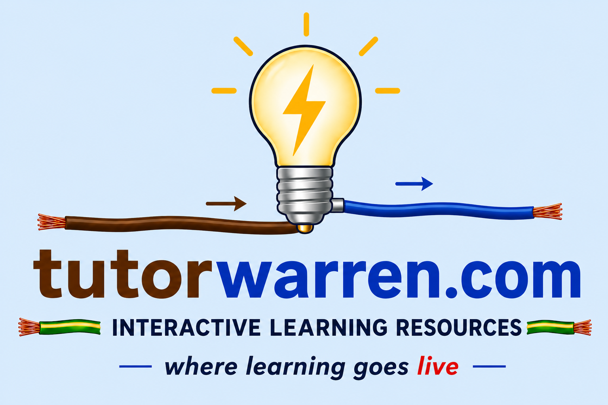
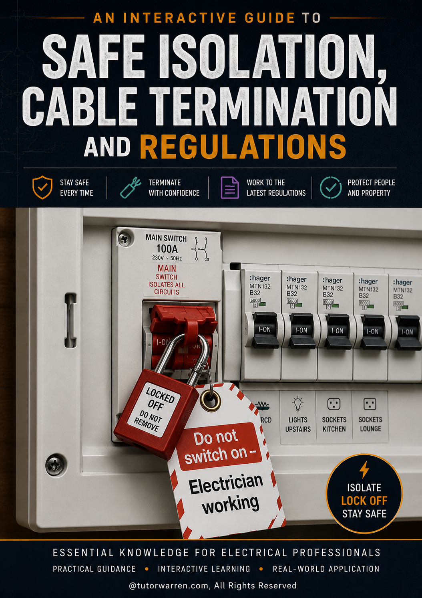
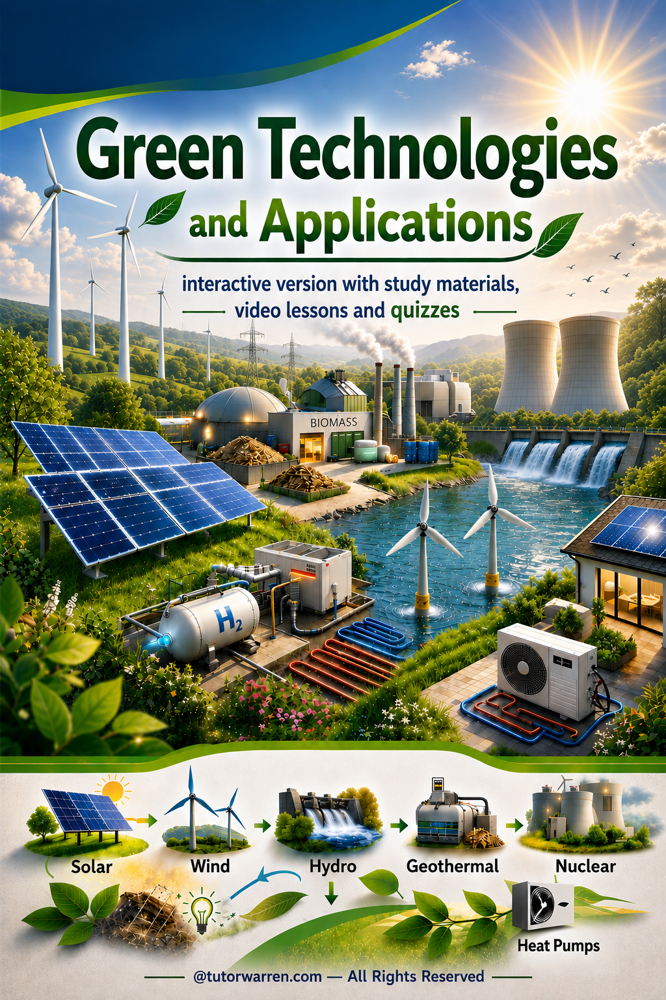

Electrical Learning Resources
Study support for electrical installation, electrical science, practical skills, testing and inspection.
Open Electrical →
Professional, interactive learning resources for Electrical, English, Maths and Green Technologies — designed for college learners, apprentices and adult learners.
TutorWarren.com provides professional interactive learning resources in Electrical, English, Maths and Green Technologies, helping learners study practical subjects and succeed through modern digital learning.
Study support for electrical installation, electrical science, practical skills, testing and inspection.
Open Electrical →Explore sustainable energy solutions and the technologies shaping a greener future.
Open Course →Interactive learning resources for Functional Skills, GCSE and ESOL support.
Open English →Interactive learning resources for Functional Skills and GCSE Maths support.
Open Maths →
The complete study resource for Electrical learners, covering theory, principles and practical applications.
Available soon

An interactive Level 3 learning resource covering safe isolation, lock-off procedures, cable termination methods and key electrical regulations.
✅ Published

A complete interactive course covering renewable energy technologies and sustainable solutions.
✅ Published
Contact Tutor Warren for enquiries, collaborations and learning resource development.
Email: warren@tutorwarren.com
General enquiries: info@tutorwarren.com